Mixed Models: Crossing and Nesting Cluster variables
keywords Mixed models, hierarchical linear model, multilevel model, ANOVA, crossing, nesting
1.0.3
Draft version, mistakes may be around
Intro
In multilevel designs, there are at least two layers or levels in the sample: the within-cluster level and the between-cluster level. This structure is simply declared in the models by specifying a cluster variable and at least one random coefficient that varies across clusters. In many applications of the mixed model, however, there are more than two levels. In a classical educational program, one can have pupils (within layer), classes (second layer), and schools (third layer). An experiment may involve several participants exposed to multiple stimuli, creating two clustering variables. Cluster variable groups may be nested or cross-classified (referred to as crossed for simplicity). Whether the cluster variable groups are nested or crossed makes a substantial difference in the model structure and the parameters that one can estimate. Therefore, it is important to clarify how different data structures can be included in the mixed model. Here, we explore the possibilities in GAMLj
In terms of logic of defining the mixed model GAMLj follows Bates et
al. (2015) R package implementation, so
further details can be found in lme4 documentation.
Cross-classified clusters
Two or more clustering variables are said to be crossed when each
level (group) of one cluster variable is repeated for all levels
(groups) of the other clustering variable. An example can be an
experiment in which each participant is exposed to a series of stimuli.
All participants see all stimuli. An example can be found
Mixed Models: Subjects by Stimuli random
effects, using the subjects_by_stimuli
dataset. There we have 50 participants measured in two conditions using
30 stimuli. The first cells of a contingency table subj(in
columns) by stimulus is shown here.
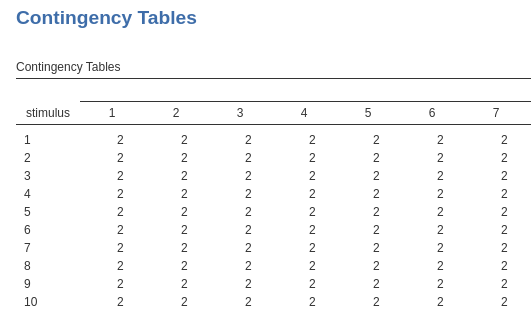
What is crucial here is that both subj and
stimulus clustering variables are a the same level (or
layer). This means that each measurement (each row) belongs to one
combination of subj and stimulus, that is is
measured for one particular participant and one particular stimulus. The
classifications are orthogonal, meaning that they are
independent one each other. In the experimental terminology , they
create a balanced 50 X 30 design.
To understand the structure of the model estimable in these designs, we can focus on the random intercepts (the same applies to slopes, but the latter depend on the specific design at hand). What random intercepts can we estimate in this kind of design? The random intercepts varying across participants, each intercept corresponding to the average score of the participant averaged across the 30 stimuli. The random intercepts varying across stimuli, each intercept corresponding to the average score associated with a stimulus, averaged across the 50 participants. Thus, the number of intercepts across participant will be N, where N is the number of participants, and the number of intercepts across stimuli would be K, where K is the number of stimuli.
If within each combination of subj and
stimulus there are several measurements, one can also
estimate the intercepts vary across subj by
stimulus cells. If subj and
stimulus were factors and not clusters, one could say that
the random intercepts can represent the variance of the main effect of
subj, the main effect of stimulus and (if
there are enough data), their interaction. For this variance, the number
of intercepts are N X K.
In terms of coding the variable, one simply needs to assign one unique value to each participants and one unique value to each stimulus.

Then one specifies the random structure as for any other mixed model:
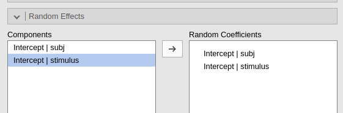
The results will show the correct variances in the tables
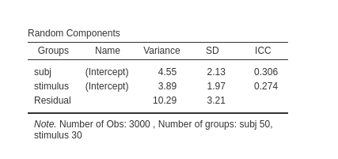
See also this very well written answer on stackexchange.
Structure by data vs by formula
What if I want to insert also a random intercept that varies across
the cells representing the combinations of subj and
stimulus (notice that in this dataset it does not make much
sense because there are only two scores in each subj by
stimulus combination, but we show this anyway as an
example).
There are two ways in GAMLj to obtain the model structure we desire. Going by data or going by formula: The two methods give exactly the same results, so which way to go depends on which way is more convenient from a practical point of view.
By data
Since we want to estimate an intercept for each combination of
subj and stimulus, we need to create a
variable in the dataset that represents those combinations: We can do
this by simply using the compute command in
Data tab.
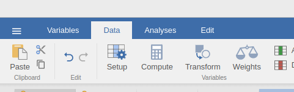
and specify the value of the new variable as a combination of the
values of subj and stimulus
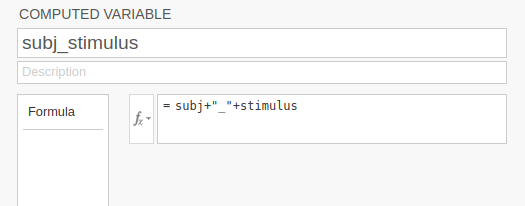
Then we can add subj_stimuli as a clustering variable of
our model, and ask for the random intercepts across it.
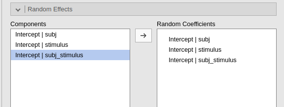
The results will now show an additional variance, which we know will capture the variability due to the combinations of the clustering variables.
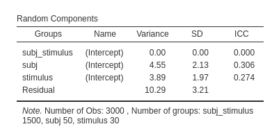
(notice that in this example the variance is zero, so the random
intercepts across subj_stimulus can be removed, but the
general idea is working)
By formula
Some user may find this method tiring. For those, the module can create the combination variable automatically. When more than one cluster variables are defined, the option `Crossing by formula option appears. By selecting it, we ask the module to list all possible crossing between clustering variables, so we can select the one we need
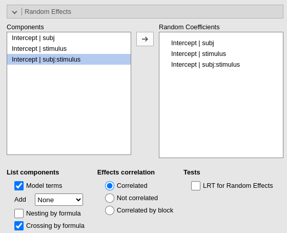
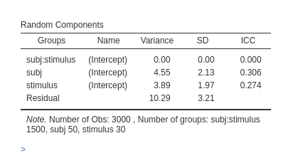
As expected, the results are identical to the results obtained with the by data set up.
Nested clusters
One clustering variable is said to be nested within another clustering variable if its levels (groups) are distinct within each level of the parent variable. A typical example are classes nested within schools: Class 1 of school 1 is clearly a different class, with different pupils, as compared with Class 1 of school 2. In our experimental example, stimuli are nested within participants if each participant is exposed to a different set of stimuli as compared with the other participants.
An example can be found in the subjects_on_stimuli dataset.
Here each participant gets their own set of stimuli, so the stimulus 1 of participant 1 is different from stimulus 1 of participant 2. This is clear in the contingency table (showing only 3 participants in columns and 3 stimuli in rows), in which every stimulus appears only in combination with one participant. There are 20 participants, 600 stimuli, 30 per participant, and each stimulus is measured over 10 trials, for a total of 6000 observations.
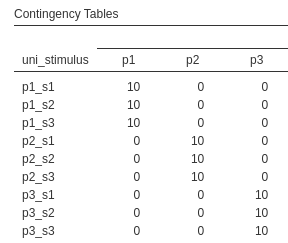
To understand the structure of the model estimable in these designs, we can focus on the random intercepts (the same applies to slopes, but the latter depends on the specific design at hand). What random intercepts can we estimate in this kind of designs? The random intercepts varying across participants, each intercepts representing the average score of the participant, averaged across the stimuli, and the random intercepts of each particular stimuli by participant combination. Thus, the number of intercepts across participant will be N=20, where N is the number of participants, and the number of intercepts across stimuli would be N=20 X K=30, where K is the number of stimuli, thus 600.
Structure by data vs by formula
The way to structure the correct model in terms of nesting clustering variables depends on the way the clustering variables are coded in the dataset.
By data
If one has coded each nested level (group) with a different code, one
simply needs to add the parent and the nested clustering variable, and
ask for their random intercepts (or any other coefficients we wish to
estimate as random). In the dataset of the example, we do have a
variable named uni_stimulus (unique
stimulus) which uses a different code for each combination of
stimulus and participant.
(showing only 3 participant and 3 stimuli)
Being coded as such, the model will recognize each stimulus as a different cluster group, and thus estimate the correct number of intercepts, and thus the correct variances. We simply list the clustering variables and their random coefficients.
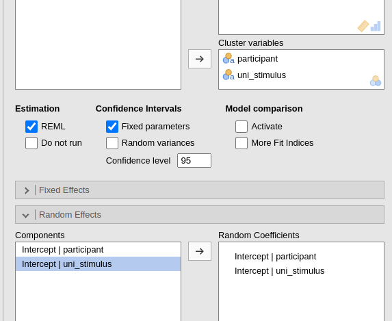 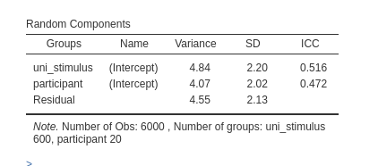
Please notice the numerosity of the clusters. There are 6000 observations, 600 stimuli and 20 participants.
By Formula
Sometimes the nested variable is not coded with a different value for
each unique level. A dataset of schools data, may have classes coded as
1, 2, 3 within each school. In our example data, for instance, there is
a variable named within_stimulus that codes each stimulus
as s1, s2 etc within each participant, so the
code s1 refers to different stimuli for different people.
Very often, data are coded like this because the s1
represents the first stimulus of each participant, s2 the
second and so forth, even if they are actually different objects.
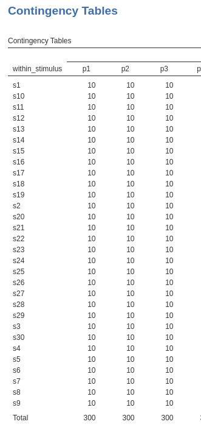
If we use a nested clustering variable as such, the model will be mis-specified.
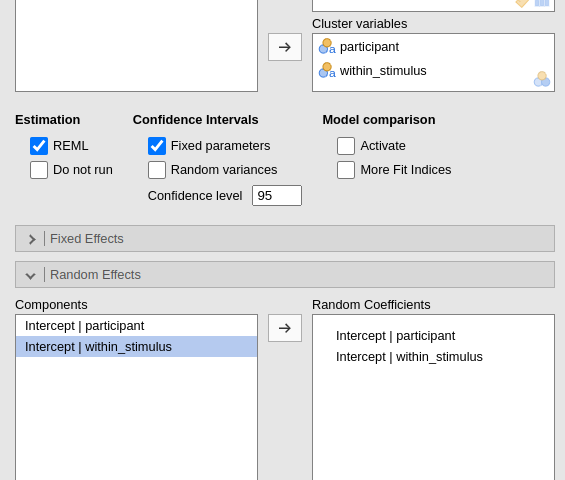

Indeed, the model will estimate 30 intercepts across stimuli, pooling
together the scores of every stimulus coded with the same value
(s1,s2 etc), as if they were the same
stimulus. But they are not the same, so the model is wrong.
As we did for cross-classified data, one can create a new variable to
explicitly identify different stimuli (nested groups) across participant
(parent groups). So using a variable like uni_stimulus as
we did in the by data approach. However, GAMLj offers the option to do that
automatically. We can select Nesting by
formula and select participant/within_stimulus. This
notation, which is the R notation for nested random coefficients (Bates et al. 2015),
will automatically identifies as different stimuli with the same value
in within_stimulus (the nested clustering variable) but
with different value in participant (the parent clustering
variable).
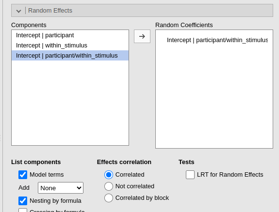 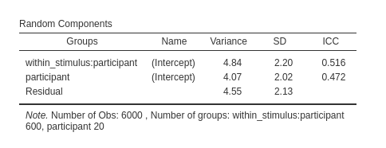
The numerosity is now correct and the results are the same as the ones obtained with the by data approach.
Differences in notation
Defining the structure of the clustering groups by data assures control over the model being estimated and correct results. The rule is simple: each clustering variable or variable representing combination of clustering variable should have its own random intercept (or possibly random slopes).
When variables are not coded in order to convey the correct structure of the data, one can use the Nesting by formula and Nesting by formula. Crossing by formula creates a clustering variable that combines the parent and the nested values into an unique code, and then estimates the random coefficients for the parent variable and for the combination of parent and nested. Crossing by formula creates a clustering variable that combines the levels (groups) of two or more clustering variables and estimates the coefficients across this new variable levels.
In practice, if uni_stimulus uniquely identifies the
levels of a nested variable, within_stimulus differentiates
stimuli only with each participant, the following three commands gives
exactly the same results.
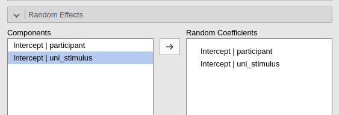 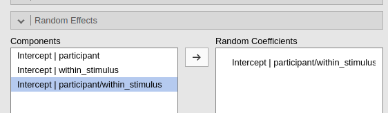 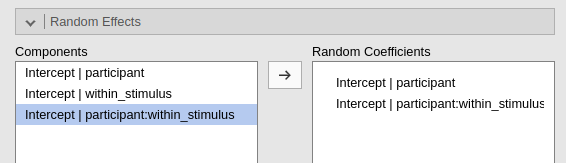
Comments?
Got comments, issues or spotted a bug? Please open an issue on GAMLj at github or send me an email